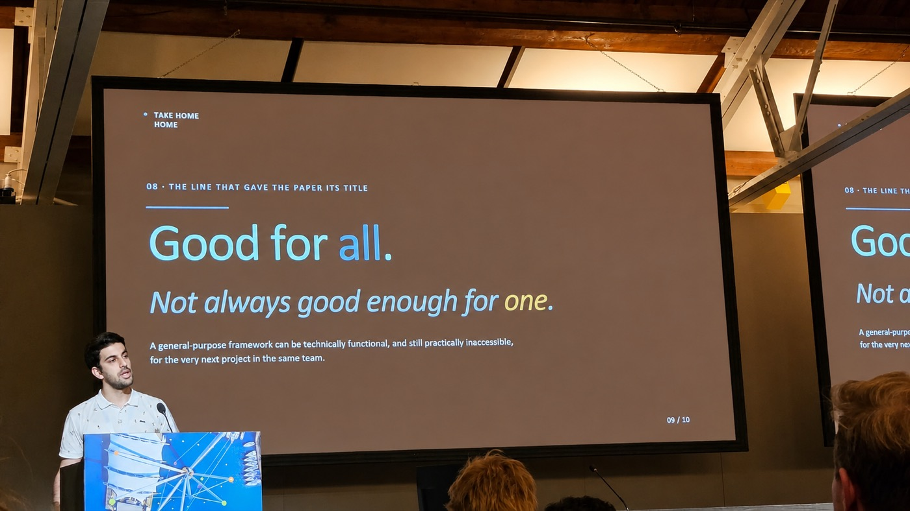

Notes / September 2026
Letting go of FL4E
A tool I built and believed in, and why it went unused.
3 minute read.
For a while, I believed FL4E could stop teams from rebuilding the same foundations for every study. It was a framework for federated learning in health research: a graphical interface, parts you could plug in and reuse, and one idea I was proud of, the degree of federation. Each center decides for itself whether its records leave. I published it in 2024, and I wanted it to become something other people would build on.
The degree of federation on a public benchmark. Fed-Heart-Disease, 740 records across 4 centers, logistic regression, area under the curve. Bars start at 0.5, a coin toss. Small on purpose, so the shape is easy to check. It is not a clinical result. Source.
Then I started my own next big study, on disability progression in multiple sclerosis. FL4E was there, ready, and I did not use it. I built a pipeline for that one task instead, in code, on a computing cluster.
FL4E did not fit that study. I needed tight control over training, evaluation and tuning, and the model kept changing while I worked. The interface that made FL4E easy for newcomers slowed me down. The data agreement also required all computing to happen inside one approved environment. I decided not to build a second version. I retired it.
Letting go of what I had expected from it was hard. I worked out why it happened, and wrote it up. I found five reasons:
- Scope. FL4E tried to serve every project, and mine was narrow, so most of its flexibility was simply overhead for me.
- How you work with it. I needed scripts, and FL4E expected you to click through a graphical interface.
- Timing. The community I hoped would form around it did not exist yet, and it had only been tested on one small public benchmark.
- Infrastructure and rules. Beyond the data agreement, FL4E had no one dedicated to maintaining it.
- Trust and governance. In the end, reuse depended more on institutions agreeing to take part than on the code.

What I would build now is smaller: tools that fit together, so a team can take only what it needs, instead of one whole platform.
The code is public, and the degree of federation is in it for anyone who wants to try it on real data.
FL4E on GitHub. The study that did not use it: Two years ahead, will this person get worse?